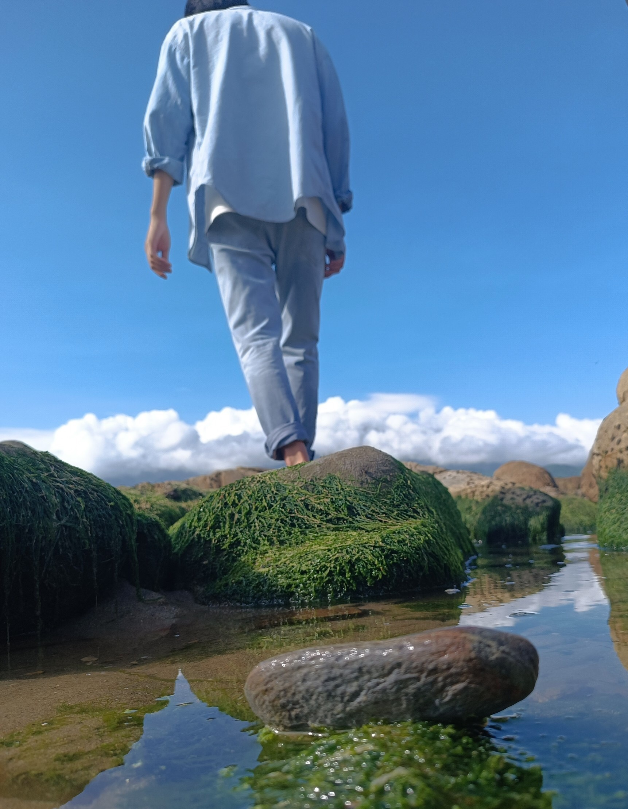

About me!
Life is like a rollercoaster, full of ups and downs. It's important to cherish the good moments and learn from the bad ones. Embrace challenges and take risks, for they can lead to great rewards. Most importantly, be kind to yourself and others, and appreciate the beauty in every moment.
Life is a journey, not a destination. Enjoy the ride and appreciate every moment, even the bumps and detours along the way, because they all contribute to the person you are becoming. Cherish the people you meet, the experiences you have, and the lessons you learn, as they are all part of the tapestry of your life. Embrace the beauty of imperfection and the uncertainty of the future, knowing that every step you take is a step forward. Life is a precious gift, so make the most of it while you can.